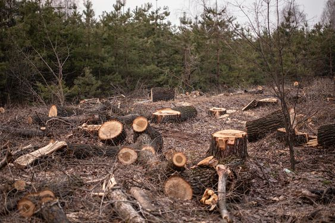
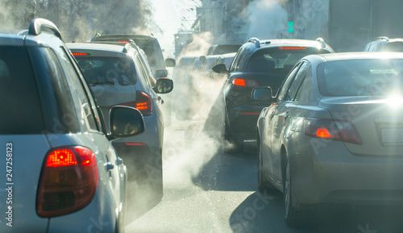
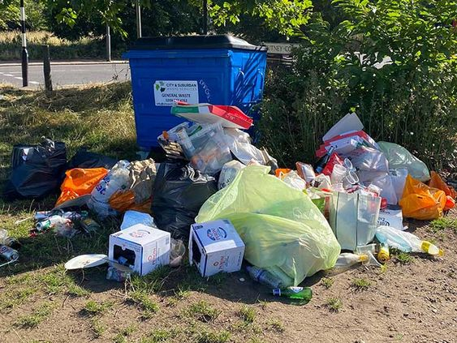

Climate Action
Causes of Climate change
Climate change is a global challenge that affects everyone, everywhere. It is disrupting national economies and affecting lives, costing people, communities and countries dearly today and even more tomorrow. Weather patterns are changing, sea levels are rising, weather events are becoming more extreme and greenhouse gas emissions are now at their highest levels in history. Without action, the world’s average surface temperature is likely to surpass 3 degrees centigrade this century. The poorest and most vulnerable people are being affected the most.
- Generating Power
- Manufacturing goods
- Cutting down forests
- Using transportation
- Consuming too much
Generating electricity and heat by burning fossil fuels causes a large chunk of global emissions. Most electricity is still generated by burning coal, oil, or gas, which produces carbon dioxide and nitrous oxide – powerful greenhouse gases that blanket the Earth and trap the sun’s heat. Globally, a bit more than a quarter of electricity comes from wind, solar and other renewable sources which, as opposed to fossil fuels, emit little to no greenhouse gases or pollutants into the air.

Manufacturing and industry produce emissions, mostly from burning fossil fuels to produce energy for making things like cement, iron, steel, electronics, plastics, clothes, and other goods. Mining and other industrial processes also release gases, as does the construction industry. Machines used in the manufacturing process often run on coal, oil, or gas; and some materials, like plastics, are made from chemicals sourced from fossil fuels. The manufacturing industry is one of the largest contributors to greenhouse gas emissions worldwide.

Cutting down forests to create farms or pastures, or for other reasons, causes emissions, since trees, when they are cut, release the carbon they have been storing. Each year approximately 12 million hectares of forest are destroyed. Since forests absorb carbon dioxide, destroying them also limits nature’s ability to keep emissions out of the atmosphere. Deforestation, together with agriculture and other land use changes, is responsible for roughly a quarter of global greenhouse gas emissions.
Most cars, trucks, ships, and planes run on fossil fuels. That makes transportation a major contributor of greenhouse gases, especially carbon-dioxide emissions. Road vehicles account for the largest part, due to the combustion of petroleum-based products, like gasoline, in internal combustion engines. But emissions from ships and planes continue to grow. Transport accounts for nearly one quarter of global energy-related carbon-dioxide emissions. And trends point to a significant increase in energy use for transport over the coming years.
Your home and use of power, how you move around, what you eat and how much you throw away all contribute to greenhouse gas emissions. So does the consumption of goods such as clothing, electronics, and plastics. A large chunk of global greenhouse gas emissions are linked to private households. Our lifestyles have a profound impact on our planet. The wealthiest bear the greatest responsibility: the richest 1 per cent of the global population combined account for more greenhouse gas emissions than the poorest 50 per cent.
